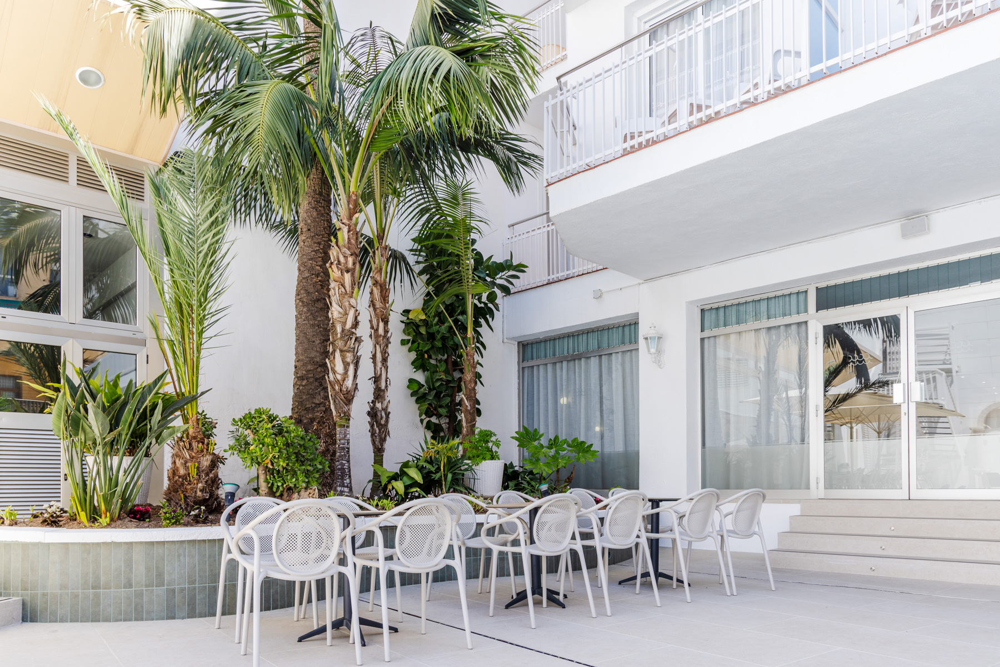
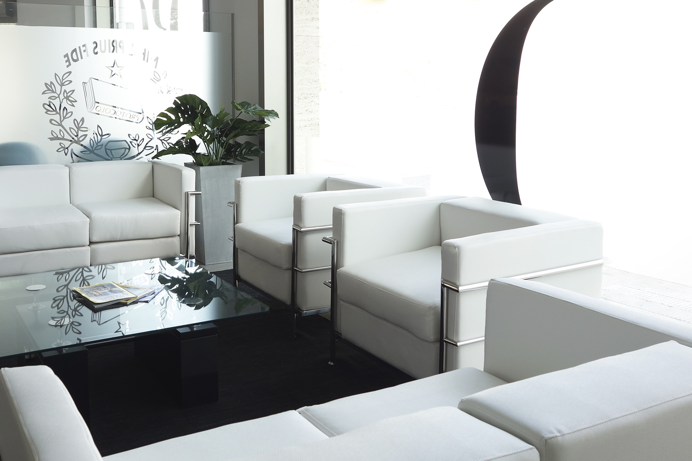
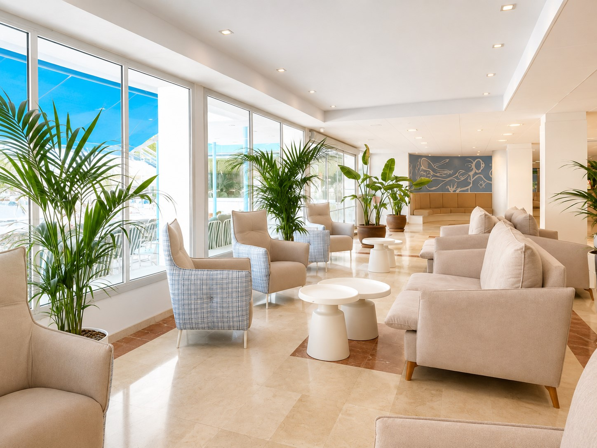
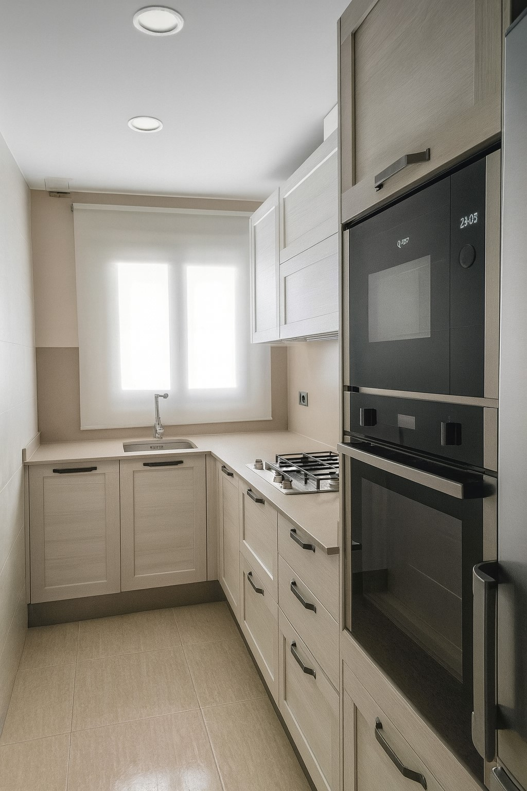

Proyectos
Una selección de interiorismo residencial y comercial pensados para crear espacios funcionales, equilibrados y llenos de identidad.

Hotel Miami Calella
Proyecto de reforma hotelera orientado a modernizar sus espacios

Notaría DRG
Diseño de un espacio comercial funcional, sobrio y contemporáneo

Hotel Montemar Marítim
Actualización de mobiliario y mejora estética en zonas comunes

Pastisseria Itchart
El disfrute de la pastelería en un ambiente cálido y acogedor.

Cocina - Calella
Reforma de ambiente dando funcionalidad, luz y equilibrio